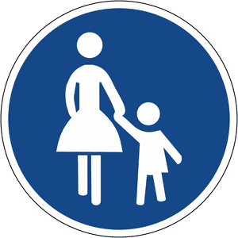

Zeichen 239
Gehweg

45 Tatbestände dazu
141158Sie befuhren mit einem Kraftfahrzeug bis 3,5 t zulässiger Gesamtmasse mit Anhänger oder einem Kraftomnibus den <Gehweg/gemeinsamen Geh- und Radweg/Gehweg eines getrennten Rad- und Gehwegs/Bereich einer Fußgängerzone>, obwohl dieser für Sie durch Zeichen <239/240/241/ 242.1> gesperrt war.
55 €
141159
Sie hielten mit einem Kraftfahrzeug bis 3,5 t zulässiger Gesamtmasse mit Anhänger oder einem Kraftomnibus <auf dem Gehweg/auf dem gemeinsamen Geh- und Radweg/auf dem Gehweg eines getrennten Rad- und Gehwegs/im Bereich einer Fußgängerzone>, obwohl dieser für Sie durch Zeichen <239/240/241/242.1> gesperrt war.
55 €
141163
Sie befuhren mit einem Kraftfahrzeug den <Gehweg/gemeinsamen Geh- und Radweg/Gehweg eines getrennten Rad- und Gehwegs/Bereich einer Fußgängerzone>, obwohl dieser für Sie durch Zeichen <239/240/241/ 242.1> gesperrt war.
50 €
141166
Sie hielten mit einem Kraftfahrzeug <auf dem Gehweg/auf dem gemeinsamen Geh- und Radweg/auf dem Gehweg eines getrennten Rad- und Gehwegs/im Bereich einer Fußgängerzone>, obwohl dieser für Sie durch Zeichen <239/240/241/242.1> gesperrt war.
50 €
141169
Sie befuhren als Radfahrer den <Gehweg/Gehweg eines getrennten Rad- und Gehwegs/Bereich einer Fußgängerzone>, obwohl dieser für Sie durch Zeichen <239/241/242.1> gesperrt war.
25 €
141170
Sie befuhren als Radfahrer den <Gehweg/Gehweg eines getrennten Rad- und Gehwegs/Bereich einer Fußgängerzone>, obwohl dieser für Sie durch Zeichen <239/241/242.1> gesperrt war und behinderten +) dadurch Andere.
30 €
141171
Sie befuhren als Radfahrer den <Gehweg/Gehweg eines getrennten Rad- und Gehwegs/Bereich einer Fußgängerzone>, obwohl dieser für Sie durch Zeichen <239/241/242.1> gesperrt war und gefährdeten +) dadurch Andere.
35 €
141172
Sie befuhren als Radfahrer den <Gehweg/Gehweg eines getrennten Rad- und Gehwegs/Bereich einer Fußgängerzone>, obwohl dieser für Sie durch Zeichen <239/241/242.1> gesperrt war. Es kam zum Unfall.
40 €
141184
Sie parkten <auf dem Gehweg/auf dem gemeinsamen Geh- und Radweg/ auf dem Gehweg eines getrennten Rad- und Gehwegs/im Bereich einer Fußgängerzone>, der durch Zeichen <239/240/241/242.1> gesperrt war.
55 €
141196
Sie fuhren <auf einem Gehweg (Zeichen 239)/in einer Fußgängerzone (Zeichen 242.1, 242.2)> mit zugelassenem Fahrzeugverkehr nicht mit Schrittgeschwindigkeit.
15 €
141212
Sie überschritten die zulässige Höchstgeschwindigkeit innerhalb geschlossener Ortschaften um (0 - 10) km/h in einem Fußgängerbereich (Zeichen 239 oder 242.1 mit Zusatzzeichen, das den Fahrzeugverkehr zulässt). Zulässige Geschwindigkeit: ... km/h. Festgestellte Geschwindigkeit (nach Toleranzabzug): ... km/h.
40 €(Lkw usw.)
141218
Sie überschritten die zulässige Höchstgeschwindigkeit innerhalb geschlossener Ortschaften um (0 - 10) km/h in einem Fußgängerbereich (Zeichen 239 oder 242.1 mit Zusatzzeichen, das den Fahrzeugverkehr zulässt). Zulässige Geschwindigkeit: ... km/h. Festgestellte Geschwindigkeit (nach Toleranzabzug): ... km/h.
30 €(andere Kfz)
141219
Sie überschritten die zulässige Höchstgeschwindigkeit innerhalb geschlossener Ortschaften um (11 - 15) km/h in einem Fußgängerbereich (Zeichen 239 oder 242.1 mit Zusatzzeichen, das den Fahrzeugverkehr zulässt). Zulässige Geschwindigkeit: ... km/h. Festgestellte Geschwindigkeit (nach Toleranzabzug): ... km/h.
50 €(andere Kfz)
141603
Sie gefährdeten +) als Kraftfahrzeugführer in einem Fußgängerbereich (Zeichen <239/242.1, 242.2> mit Zusatzzeichen), in dem Fahrzeugverkehr zugelassen war, einen Fußgänger.
60 €1 PunktB-Verstoß
141606
Sie gefährdeten +) als Radfahrer in einem Fußgängerbereich (Zeichen <239/242.1, 242.2> mit Zusatzzeichen), in dem Fahrzeugverkehr zugelassen war, einen Fußgänger.
30 €1 PunktB-Verstoß
141609
Sie gefährdeten +) als Kraftfahrzeugführer in einem Fußgängerbereich (Zeichen <239/242.1, 242.2>), in dem Fahrzeugverkehr nicht zugelassen war, einen Fußgänger.
70 €1 PunktB-Verstoß
141635
Sie überschritten die zulässige Höchstgeschwindigkeit innerhalb geschlossener Ortschaften um (11 - 15) km/h in einem Fußgängerbereich (Zeichen 239 oder 242.1 mit Zusatzzeichen, das den Fahrzeugverkehr zulässt). Zulässige Geschwindigkeit: ... km/h. Festgestellte Geschwindigkeit (nach Toleranzabzug): ... km/h.
60 €(Lkw usw.)
141636
Sie überschritten die zulässige Höchstgeschwindigkeit innerhalb geschlossener Ortschaften um (16 - 20) km/h in einem Fußgängerbereich (Zeichen 239 oder 242.1 mit Zusatzzeichen, das den Fahrzeugverkehr zulässt). Zulässige Geschwindigkeit: ... km/h. Festgestellte Geschwindigkeit (nach Toleranzabzug): ... km/h.
160 €1 PunktA-Verstoß(Lkw usw.)
141637
Sie überschritten die zulässige Höchstgeschwindigkeit innerhalb geschlossener Ortschaften um (21 - 25) km/h in einem Fußgängerbereich (Zeichen 239 oder 242.1 mit Zusatzzeichen, das den Fahrzeugverkehr zulässt). Zulässige Geschwindigkeit: ... km/h. Festgestellte Geschwindigkeit (nach Toleranzabzug): ... km/h.
175 €1 PunktA-Verstoß(Lkw usw.)
141638
Sie überschritten die zulässige Höchstgeschwindigkeit innerhalb geschlossener Ortschaften um (26 - 30) km/h in einem Fußgängerbereich (Zeichen 239 oder 242.1 mit Zusatzzeichen, das den Fahrzeugverkehr zulässt). Zulässige Geschwindigkeit: ... km/h. Festgestellte Geschwindigkeit (nach Toleranzabzug): ... km/h.
235 €2 PunkteFahrverbot 1 Monat(e)A-Verstoß(Lkw usw.)
141639
Sie überschritten die zulässige Höchstgeschwindigkeit innerhalb geschlossener Ortschaften um (31 - 40) km/h in einem Fußgängerbereich (Zeichen 239 oder 242.1 mit Zusatzzeichen, das den Fahrzeugverkehr zulässt). Zulässige Geschwindigkeit: ... km/h. Festgestellte Geschwindigkeit (nach Toleranzabzug): ... km/h.
340 €2 PunkteFahrverbot 1 Monat(e)A-Verstoß(Lkw usw.)
141640
Sie überschritten die zulässige Höchstgeschwindigkeit innerhalb geschlossener Ortschaften um (41 - 50) km/h in einem Fußgängerbereich (Zeichen 239 oder 242.1 mit Zusatzzeichen, das den Fahrzeugverkehr zulässt). Zulässige Geschwindigkeit: ... km/h. Festgestellte Geschwindigkeit (nach Toleranzabzug): ... km/h.
560 €2 PunkteFahrverbot 2 Monat(e)A-Verstoß(Lkw usw.)
141641
Sie überschritten die zulässige Höchstgeschwindigkeit innerhalb geschlossener Ortschaften um (51 - 60) km/h in einem Fußgängerbereich (Zeichen 239 oder 242.1 mit Zusatzzeichen, das den Fahrzeugverkehr zulässt). Zulässige Geschwindigkeit: ... km/h. Festgestellte Geschwindigkeit (nach Toleranzabzug): ... km/h.
700 €2 PunkteFahrverbot 3 Monat(e)A-Verstoß(Lkw usw.)
141642
Sie überschritten die zulässige Höchstgeschwindigkeit innerhalb geschlossener Ortschaften um (61 - ∞) km/h in einem Fußgängerbereich (Zeichen 239 oder 242.1 mit Zusatzzeichen, das den Fahrzeugverkehr zulässt). Zulässige Geschwindigkeit: ... km/h. Festgestellte Geschwindigkeit (nach Toleranzabzug): ... km/h.
800 €2 PunkteFahrverbot 3 Monat(e)A-Verstoß(Lkw usw.)
141643
Sie überschritten die zulässige Höchstgeschwindigkeit innerhalb geschlossener Ortschaften um (0 - 10) km/h in einem Fußgängerbereich (Zeichen 239 oder 242.1 mit Zusatzzeichen, das den Fahrzeugverkehr zulässt). Zulässige Geschwindigkeit: ... km/h. Festgestellte Geschwindigkeit (nach Toleranzabzug): ... km/h.
70 €(gef. Güter usw.)
141644
Sie überschritten die zulässige Höchstgeschwindigkeit innerhalb geschlossener Ortschaften um (11 - 15) km/h in einem Fußgängerbereich (Zeichen 239 oder 242.1 mit Zusatzzeichen, das den Fahrzeugverkehr zulässt). Zulässige Geschwindigkeit: ... km/h. Festgestellte Geschwindigkeit (nach Toleranzabzug): ... km/h.
120 €1 PunktA-Verstoß(gef. Güter usw.)
141645
Sie überschritten die zulässige Höchstgeschwindigkeit innerhalb geschlossener Ortschaften um (16 - 20) km/h in einem Fußgängerbereich (Zeichen 239 oder 242.1 mit Zusatzzeichen, das den Fahrzeugverkehr zulässt). Zulässige Geschwindigkeit: ... km/h. Festgestellte Geschwindigkeit (nach Toleranzabzug): ... km/h.
320 €1 PunktA-Verstoß(gef. Güter usw.)
141646
Sie überschritten die zulässige Höchstgeschwindigkeit innerhalb geschlossener Ortschaften um (21 - 25) km/h in einem Fußgängerbereich (Zeichen 239 oder 242.1 mit Zusatzzeichen, das den Fahrzeugverkehr zulässt). Zulässige Geschwindigkeit: ... km/h. Festgestellte Geschwindigkeit (nach Toleranzabzug): ... km/h.
360 €2 PunkteFahrverbot 1 Monat(e)A-Verstoß(gef. Güter usw.)
141647
Sie überschritten die zulässige Höchstgeschwindigkeit innerhalb geschlossener Ortschaften um (26 - 30) km/h in einem Fußgängerbereich (Zeichen 239 oder 242.1 mit Zusatzzeichen, das den Fahrzeugverkehr zulässt). Zulässige Geschwindigkeit: ... km/h. Festgestellte Geschwindigkeit (nach Toleranzabzug): ... km/h.
480 €2 PunkteFahrverbot 1 Monat(e)A-Verstoß(gef. Güter usw.)
141648
Sie überschritten die zulässige Höchstgeschwindigkeit innerhalb geschlossener Ortschaften um (31 - 40) km/h in einem Fußgängerbereich (Zeichen 239 oder 242.1 mit Zusatzzeichen, das den Fahrzeugverkehr zulässt). Zulässige Geschwindigkeit: ... km/h. Festgestellte Geschwindigkeit (nach Toleranzabzug): ... km/h.
640 €2 PunkteFahrverbot 2 Monat(e)A-Verstoß(gef. Güter usw.)
141649
Sie überschritten die zulässige Höchstgeschwindigkeit innerhalb geschlossener Ortschaften um (41 - 50) km/h in einem Fußgängerbereich (Zeichen 239 oder 242.1 mit Zusatzzeichen, das den Fahrzeugverkehr zulässt). Zulässige Geschwindigkeit: ... km/h. Festgestellte Geschwindigkeit (nach Toleranzabzug): ... km/h.
800 €2 PunkteFahrverbot 3 Monat(e)A-Verstoß(gef. Güter usw.)
141650
Sie überschritten die zulässige Höchstgeschwindigkeit innerhalb geschlossener Ortschaften um (51 - 60) km/h in einem Fußgängerbereich (Zeichen 239 oder 242.1 mit Zusatzzeichen, das den Fahrzeugverkehr zulässt). Zulässige Geschwindigkeit: ... km/h. Festgestellte Geschwindigkeit (nach Toleranzabzug): ... km/h.
900 €2 PunkteFahrverbot 3 Monat(e)A-Verstoß(gef. Güter usw.)
141651
Sie überschritten die zulässige Höchstgeschwindigkeit innerhalb geschlossener Ortschaften um (61 - ∞) km/h in einem Fußgängerbereich (Zeichen 239 oder 242.1 mit Zusatzzeichen, das den Fahrzeugverkehr zulässt). Zulässige Geschwindigkeit: ... km/h. Festgestellte Geschwindigkeit (nach Toleranzabzug): ... km/h.
950 €2 PunkteFahrverbot 3 Monat(e)A-Verstoß(gef. Güter usw.)
141653
Sie überschritten die zulässige Höchstgeschwindigkeit innerhalb geschlossener Ortschaften um (16 - 20) km/h in einem Fußgängerbereich (Zeichen 239 oder 242.1 mit Zusatzzeichen, das den Fahrzeugverkehr zulässt). Zulässige Geschwindigkeit: ... km/h. Festgestellte Geschwindigkeit (nach Toleranzabzug): ... km/h.
70 €(andere Kfz)
141654
Sie überschritten die zulässige Höchstgeschwindigkeit innerhalb geschlossener Ortschaften um (21 - 25) km/h in einem Fußgängerbereich (Zeichen 239 oder 242.1 mit Zusatzzeichen, das den Fahrzeugverkehr zulässt). Zulässige Geschwindigkeit: ... km/h. Festgestellte Geschwindigkeit (nach Toleranzabzug): ... km/h.
115 €1 PunktA-Verstoß(andere Kfz)
141655
Sie überschritten die zulässige Höchstgeschwindigkeit innerhalb geschlossener Ortschaften um (26 - 30) km/h in einem Fußgängerbereich (Zeichen 239 oder 242.1 mit Zusatzzeichen, das den Fahrzeugverkehr zulässt). Zulässige Geschwindigkeit: ... km/h. Festgestellte Geschwindigkeit (nach Toleranzabzug): ... km/h.
180 €1 PunktA-Verstoß(andere Kfz)
141656
Sie überschritten die zulässige Höchstgeschwindigkeit innerhalb geschlossener Ortschaften um (31 - 40) km/h in einem Fußgängerbereich (Zeichen 239 oder 242.1 mit Zusatzzeichen, das den Fahrzeugverkehr zulässt). Zulässige Geschwindigkeit: ... km/h. Festgestellte Geschwindigkeit (nach Toleranzabzug): ... km/h.
260 €2 PunkteFahrverbot 1 Monat(e)A-Verstoß(andere Kfz)
141657
Sie überschritten die zulässige Höchstgeschwindigkeit innerhalb geschlossener Ortschaften um (41 - 50) km/h in einem Fußgängerbereich (Zeichen 239 oder 242.1 mit Zusatzzeichen, das den Fahrzeugverkehr zulässt). Zulässige Geschwindigkeit: ... km/h. Festgestellte Geschwindigkeit (nach Toleranzabzug): ... km/h.
400 €2 PunkteFahrverbot 1 Monat(e)A-Verstoß(andere Kfz)
141658
Sie überschritten die zulässige Höchstgeschwindigkeit innerhalb geschlossener Ortschaften um (51 - 60) km/h in einem Fußgängerbereich (Zeichen 239 oder 242.1 mit Zusatzzeichen, das den Fahrzeugverkehr zulässt). Zulässige Geschwindigkeit: ... km/h. Festgestellte Geschwindigkeit (nach Toleranzabzug): ... km/h.
560 €2 PunkteFahrverbot 2 Monat(e)A-Verstoß(andere Kfz)
141659
Sie überschritten die zulässige Höchstgeschwindigkeit innerhalb geschlossener Ortschaften um (61 - 70) km/h in einem Fußgängerbereich (Zeichen 239 oder 242.1 mit Zusatzzeichen, das den Fahrzeugverkehr zulässt). Zulässige Geschwindigkeit: ... km/h. Festgestellte Geschwindigkeit (nach Toleranzabzug): ... km/h.
700 €2 PunkteFahrverbot 3 Monat(e)A-Verstoß(andere Kfz)
141660
Sie überschritten die zulässige Höchstgeschwindigkeit innerhalb geschlossener Ortschaften um (71 - ∞) km/h in einem Fußgängerbereich (Zeichen 239 oder 242.1 mit Zusatzzeichen, das den Fahrzeugverkehr zulässt). Zulässige Geschwindigkeit: ... km/h. Festgestellte Geschwindigkeit (nach Toleranzabzug): ... km/h.
800 €2 PunkteFahrverbot 3 Monat(e)A-Verstoß(andere Kfz)
141736
Sie befuhren mit einem Kraftfahrzeug über 3,5 t zul. Gesamtmasse (ausgenommen PKW und KOM) den <Gehweg/gemeinsamen Geh- und Radweg/ Gehweg des getrennten Rad- und Gehwegs/Bereich einer Fußgängerzone>, obwohl dieser für Sie durch Zeichen <239/240/241/242.1> gesperrt war.
100 €
141737
Sie hielten mit einem Kraftfahrzeug über 3,5 t zul. Gesamtmasse (ausgenommen PKW und KOM) <auf dem Gehweg/auf dem gemeinsamen Geh- und Radweg/auf dem Gehweg des getrennten Rad- und Gehwegs/im Bereich einer Fußgängerzone>, obwohl dieser für Sie durch Zeichen <239/240/241/242.1> gesperrt war.
100 €
141785
Sie parkten <auf dem Gehweg/auf dem gemeinsamen Geh- und Radweg/ auf dem Gehweg eines getrennten Rad- und Gehwegs/im Bereich einer Fußgängerzone>, der durch Zeichen <239/240/241/242.1> gesperrt war und behinderten +) dadurch Andere.
70 €
141786
Sie parkten länger als 3 Stunden <auf dem Gehweg/auf dem gemeinsamen Geh- und Radweg/auf dem Gehweg eines getrennten Rad- und Gehwegs/ im Bereich einer Fußgängerzone> der durch Zeichen 239/240/241/ 242.1 **) gesperrt war.
70 €